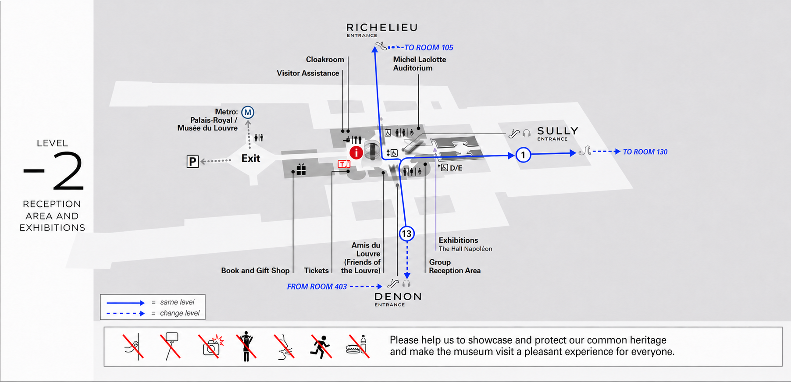
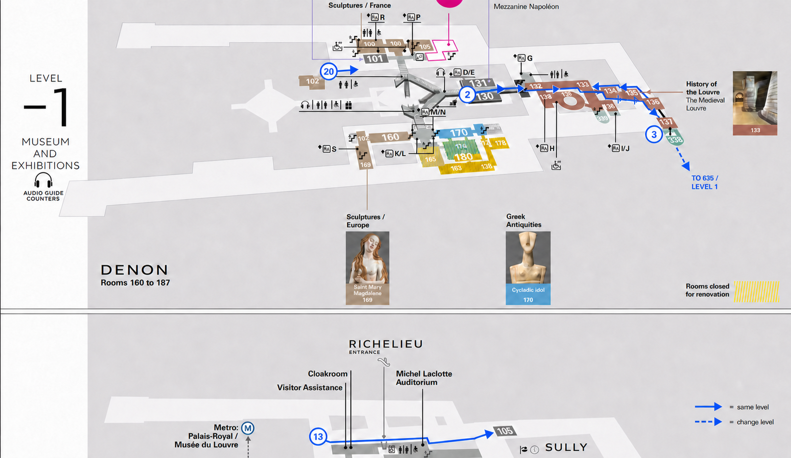
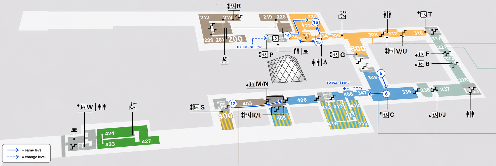
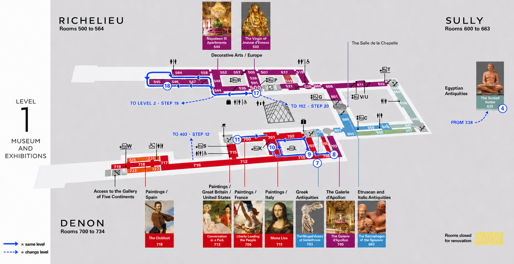
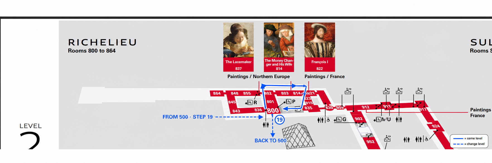

Step 1 enters Sully. Step 13 crosses from Denon to Richelieu without leaving the museum.

Medieval rooms and room 338 are at the right. Cour Puget and Cour Marly are at the upper left.

The blue Greek rooms, room 403 and the Near Eastern rooms are separate route segments.

The Denon painting circuit is below. Room 635 and the Richelieu apartment loop are above.

Use the room 800 landing for the out-and-back route to rooms 837 and 814.